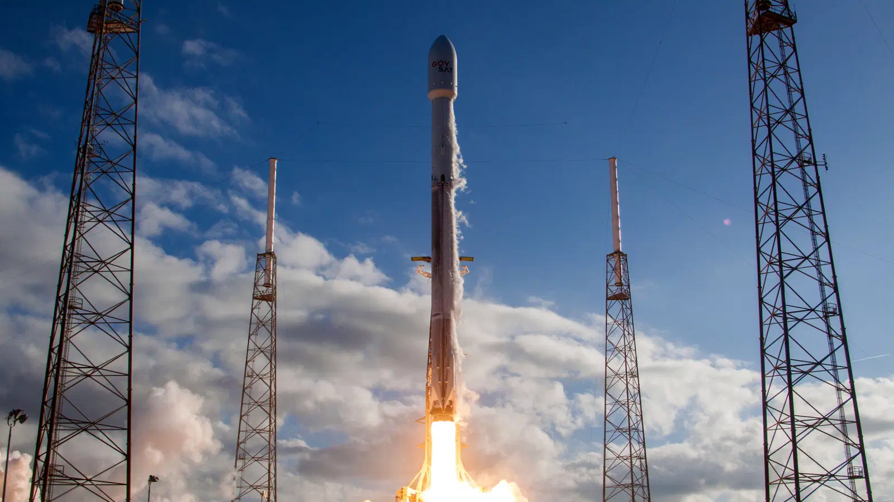
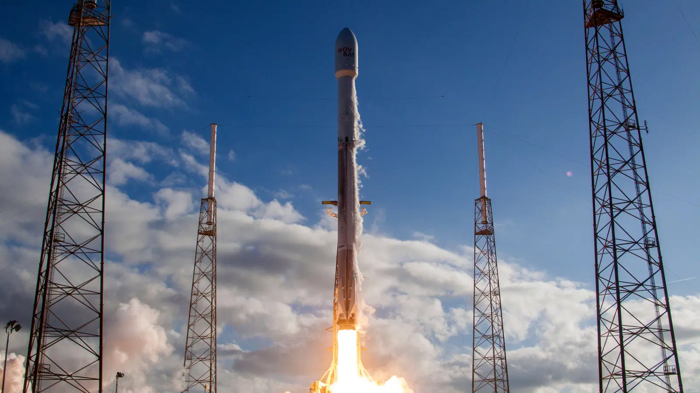
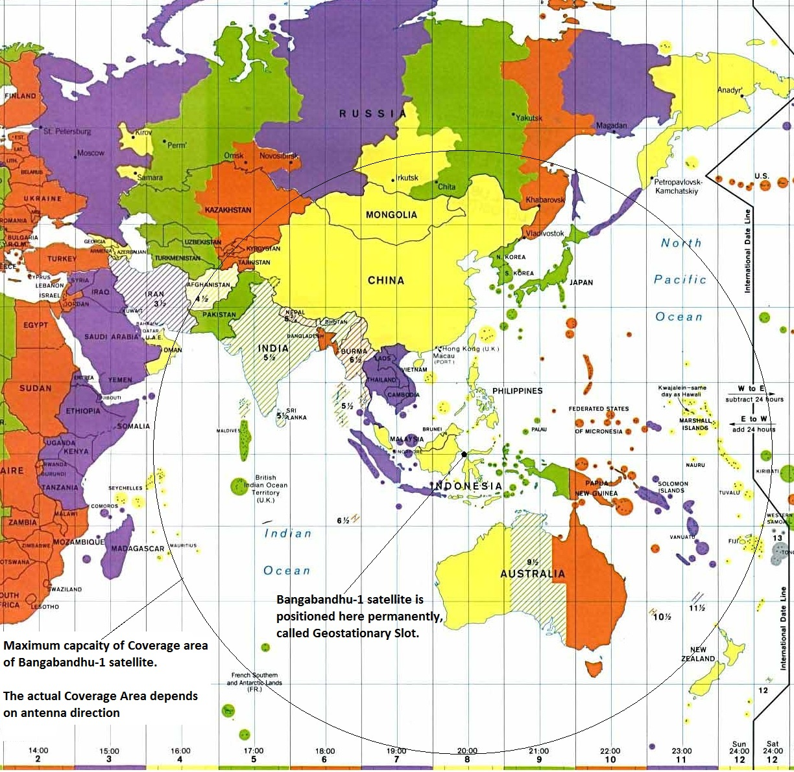
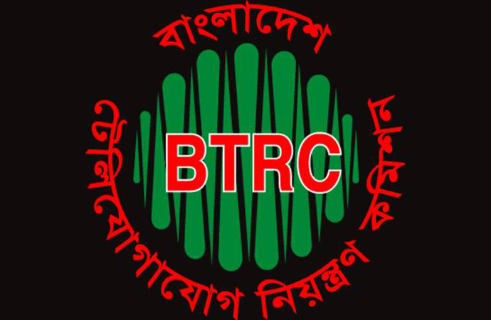
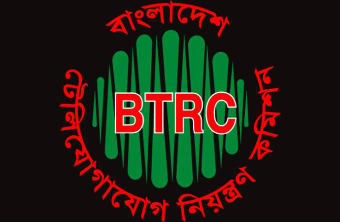

ছবিঃ বঙ্গবন্ধু স্যাটেলাইট-১
বঙ্গবন্ধু স্যাটেলাইট-১
স্যাটেলাইট সম্পর্কে
বঙ্গবন্ধু স্যাটেলাইট-১ বাংলাদেশের প্রথম ভূস্থির যোগাযোগ ও সম্প্রচার উপগ্রহ। এটি ১১ মে ২০১৮ কেনেডি স্পেস সেন্টার থেকে উৎক্ষেপণ করা হয়। এর মধ্য দিয়ে ৫৭ তম দেশ হিসেবে নিজস্ব স্যাটেলাইট উৎক্ষেপণকারী দেশের তালিকায় যোগ হয় বাংলাদেশ। এই প্রকল্পটি ডাক ও টেলিযোগাযোগ বিভাগের অধীন বাংলাদেশ টেলিযোগাযোগ নিয়ন্ত্রণ কমিশন কর্তৃক বাস্তবায়িত হয় এবং এটি ফ্যালকন-৯ ব্লক-৫ রকেটের মাধ্যমে প্রথম পেলোড উৎক্ষেপণ করা হয়।
বঙ্গবন্ধু স্যাটেলাইট-১ এর ওজন ৩,৭০০ কেজি এবং এর ক্ষমতা ৬ KW। এটির ট্রান্সপণ্ডার ব্যাণ্ড হলো- ১৪ C Band ও ২৬ Ku Band।
স্যাটেলাইটের গঠন
পৃথিবীর সাথে সার্বক্ষণিক যোগাযোগ রক্ষার জন্য এর রয়েছে ২৬ টি কু-ব্যাণ্ড এবং ১৪ টি সি-ব্যান্ড। যা পৃথিবী হতে সিগনাল গ্রহণ করে এবং এমপ্লিফাই করে প্রেরণ করে। এর জন্য পৃথিবীতে একটি গ্রাউণ্ড স্টেশনের দরকার পড়ে। পৃথিবী থেকে আসা এই দূর্বল সিগনালটি পুণরায় অপর স্থানে পাঠানোর জন্য এমপ্লিফাই করার প্রয়োজন হয়। তাই, এমপ্লিফাই করার জন্য এতে রয়েছে On Board Computer (OBC) যা স্যাটেলাইটের মাদারবোর্ড হিসেবে কাজ করে। এই স্যাটেলাইটের কু-ব্যাণ্ডের তরঙ্গ সীমা ১২-১৮ গিগাহার্টজ এবং তরঙ্গদৈর্ঘ্য ২.৫-১.৬৭ সে.মি। এই কু-ব্যাণ্ড টিভি সিগনাল ব্রডকাস্ট করে থাকে। যদি পৃথিবীতে বৃষ্টি হয় তাহলে সিগনাল লস্ট হওয়া থেকে বাঁচাতে সি-ব্যাণ্ড রিসিভার ও সেণ্ডার ব্যাবহার করা হয়। যেখানে এর তরঙ্গসীমা ৪.৮ গিগাহার্টজ এবং তরঙ্গদৈর্ঘ্য ৩.৭৫-৭.৫ সে.মি।

নির্মাণ খরচ
কৃত্রিম উপগ্রহ উৎক্ষেপণের মাধ্যমে বাংলাদেশে সম্প্রচার ও টেলিযোগাযোগ সেবা পরিচালনার জন্য ২০১৪ সালের সেপ্টেম্বর মাসে একনেক সভায় দুই হাজার ৯৬৮ কোটি টাকা বরাদ্দ দেওয়া হয়। এর মধ্যে বাংলাদেশ সরকারের নিজস্ব তহবিল থেকে বরাদ্দ দেওয়া হয় এক হাজার ৩১৫ কোটি ৫১ লাখ টাকা, যা মোট ব্যয়ের প্রায় ৪৪ শতাংশ। এ ছাড়া বিডার্স ফাইন্যান্সিং -এর মাধ্যমে এ প্রকল্পের জন্য এক হাজার ৬৫২ কোটি ৪৪ লাখ টাকা সংগ্রহের পরিকল্পনা নেওয়া হয়। ২০১৬ সালের সেপ্টেম্বরে হংকং-সাংহাই ব্যাংকিং করপোরেশন (এইচএসবিসি) -এর সাথে সরকারের প্রায় একহাজার ৪০০ কোটি টাকার ঋণচুক্তি হয়।এক দশমিক ৫১ শতাংশ হার সুদসহ ১২ বছরে ২০ কিস্তিতে এই অর্থ পরিশোধ করতে হবে।
২০১৪ সালের ডিসেম্বর মাসে রাশিয়ান সংস্থা ইন্টারস্পুটনিক -এর কাছ থেকে অরবিটাল স্লট অনুমোদন দেওয়া হয়। এর অর্থমূল্য ২১৮ কোটি ৯৬ লাখ টাকা।
বিভিন্ন ঠিকাদারী প্রতিষ্ঠান
বঙ্গবন্ধু স্যাটেলাইট-১ প্রকল্পের জন্য দেশ-বিদেশ সহ নানা ঠিকাদারী প্রতিষ্ঠান নিয়োগ করা হয়েছে। স্যাটেলাইট নির্মাণ, ডিজাইন, পরীক্ষা ও উৎক্ষেপণের জন্য আলাদা আলাদা ঠিকাদারী প্রতিষ্ঠান নিয়োগ করা হয়েছিল। স্যাটেলাইট নির্মাণ ও ডিজাইনের জন্য থ্যালেস এলেনিয়া স্পেস ফ্যাক্টরি(Thales Alenia Sapce Factory) -কে আবেদন করে। যেখানে স্যাটেলাইটের সমস্ত প্রয়োজনীয় সরঞ্জামাদী ইন্সটল করা হয়। এই কাজে কিছু বাংলাদেশী বিজ্ঞানীরাও অংশগ্রহণ করেছিলেন।


 
উৎক্ষেপণ
স্পেসএক্স ফ্যালকন-৯ উৎক্ষেপণ যানে করে ১১ মে ২০১৮ সফলভাবে বঙ্গবন্ধু-১ কৃত্রিম উপগ্রহ উৎক্ষেপণ করা হয়। এটি ফ্যালকন ৯ রকেটির নতুন ব্লক-৫ মডেল ব্যবহার করে প্রথম পেলোড উৎক্ষেপণ ছিল। বঙ্গবন্ধু-১ কৃত্রিম উপগ্রহ উৎক্ষেপণের জন্য ২০১৭ সালের ১৬ ডিসেম্বর তারিখ ঠিক করা হয়, তবে হারিকেন ইরমা-র কারণে ফ্লোরিডায় ব্যাপক ক্ষয়ক্ষতি হলে তা পিছিয়ে যায়।
২০১৮ সালেও কয়েক দফা উৎক্ষেপণের তারিখ পিছিয়ে যায় আবহাওয়ার কারণে। চূড়ান্ত পর্যায়ে উৎক্ষেপণ প্রস্তুতির অংশ হিসেবে ৪ মে ২০১৮ তারিখে ফ্লোরিডার কেনেডি স্পেস সেন্টার লঞ্চ কমপ্লেক্স ৩৯এ (Kennedy Space Center Launch Complex 39A)-এ দুই পর্যায়ের এই রকেটের স্ট্যাটিক ফায়ার টেস্ট সম্পন্ন হয়।
কৃত্রিম উপগ্রহটি ১০ মে ২০১৮ তারিখে উৎক্ষেপণের তারিখ ঠিক করা হয়; কিন্তু ১০ মে উৎক্ষেপণের সময় T-৫৮ সেকেন্ডে এসে তা বাতিল করা হয়। শেষ মিনিটে কিছু কারিগরি সমস্যার কারণে উৎক্ষেপণ স্থগিত করা হয়। অবশেষে এটি ১১ মে উৎক্ষেপণ করা হয়।
কৃত্রিম উপগ্রহটি উৎক্ষেপণ করার পর, বাংলাদেশ ১২ মে ২০১৮ তারিখে এটি থেকে পরীক্ষামূলক সংকেত পেতে শুরু করে।

ভূ-কেন্দ্র
বঙ্গবন্ধু-১ কৃত্রিম উপগ্রহটি সম্পূর্ণ চালু হওয়ার পর বাংলাদেশের ভূ-কেন্দ্র থেকে নিয়ন্ত্রণ করা হচ্ছে। এই জন্য গাজীপুর জেলার জয়দেবপুর ও রাঙ্গামাটির বেতবুনিয়ায় ভূকেন্দ্র তৈরি করা হয়। জয়দেবপুরের ভূ-কেন্দ্রটি হল মূল স্টেশন। আর বেতবুনিয়ায় স্টেশনটি দ্বিতীয় মাধ্যম ব্যকআপ হিসেবে রাখা হয়। এছাড়া ইন্দোনেশিয়া ও ফিলিপাইনে দুটি ভূ-উপগ্রহ উপকেন্দ্র স্থাপন করা হচ্ছে।

কক্ষপথের পরামিতি (Orbital Parameters)
আমল (Regime): GEO
দ্রাঘিমাংশ (Longitude): 119.09°E
উৎকেন্দ্রিকতা (Eccentricity): 0.0001
Perigee altitude: 35789.3 km
Apogee altitude: 35798.5 km
সময়কাল (Period): 1,436.1 minutes
কক্ষীয় বেগ (Velocity): 3.07 km/s
কক্ষীয় প্রসঙ্গ-সময়বিন্দু (Epoch): 6 June 2018
উপগ্রহের অবস্থান ও কাভারেজ এরিয়া

সুবিধাসমূহ
বঙ্গবন্ধু ১ স্যাটেলাইট থেকে ৩ ধরনের সুবিধা পাওয়া যাবে।
বাংলাদেশের প্রথম স্যাটেলাইট
বাংলাদেশের প্রথম জিওস্টেশনারি স্যাটেলাইট হলো বঙ্গবন্ধু স্যাটেলাইট-১। কিন্তু এর আগেও ব্র্যাক ইউনিভার্সিটি একটি স্যাটেলাইট পৃথিবীর নিম্ন কক্ষপথে প্রেরণ করে যার নাম ব্র্যাক অন্বেষা। এই স্যাটেলাইট শুধুমাত্র পরীক্ষার জন্য উৎক্ষেপণ করা হয়, যা বাংলাদেশের প্রথম Low Earth Orbit Nano Satellite নামে পরিচিত।

ছবিঃ ব্র্যাক অন্বেষা
মিশন বিএস-১ সম্পর্কে আরও জানতে এখানে ক্লিক করুন
-:তথ্য সূত্র:-
 



SHAHRIAR ALI SIAM-->